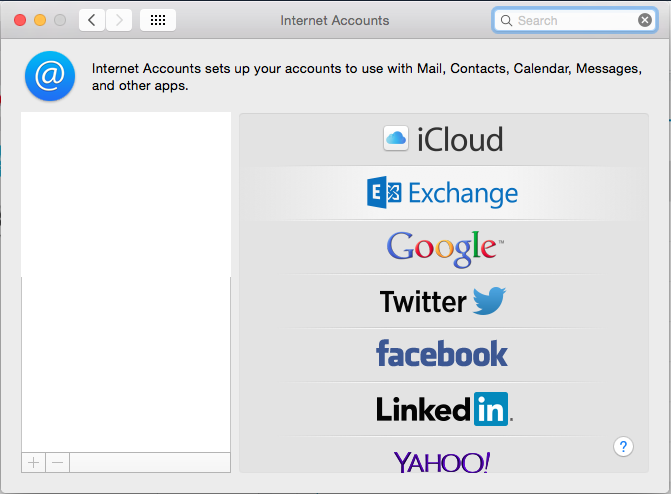
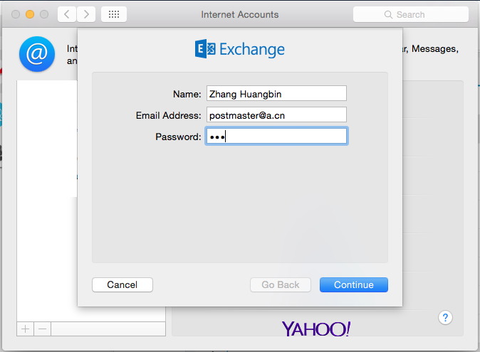
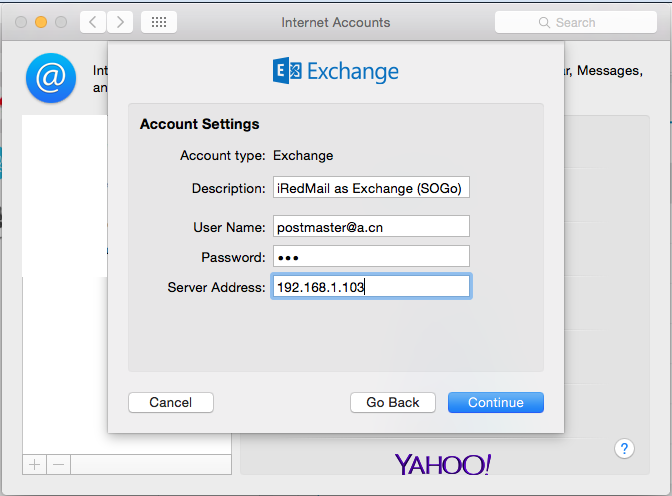
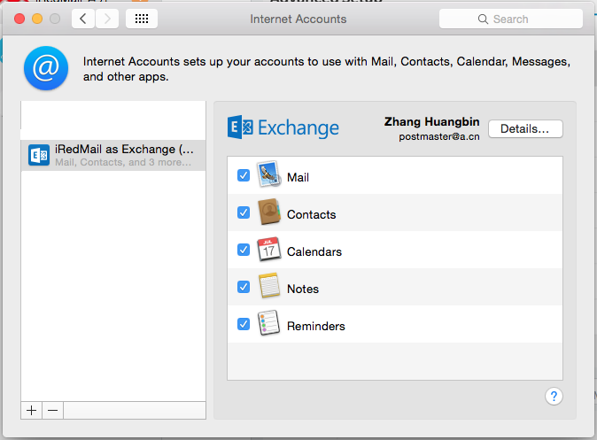

Important note:
- iRedMail-0.9.0 doesn't integrate OpenChange and Samba4, so SOGo groupware in iRedMail can NOT provide full support for Microsoft Outlook clients.
1: Open application System Preferences:
2: Click Internet Accounts:

3: on right panel, click Exchange

4: fill your account info in popup window
your full nameyour full email addresspassword of your email account
If it cannot find required info automatically, it will show you another window to let you fill them manually:
you can type anything hereyour full email addresspassword of your email accountserver name or IP address
5: After it verified all settings, you will see the final window like below:

Document published under a CC BY-ND 3.0 license. If you found something wrong, please do contact us to fix it.